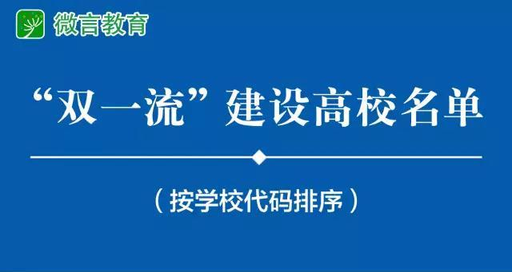
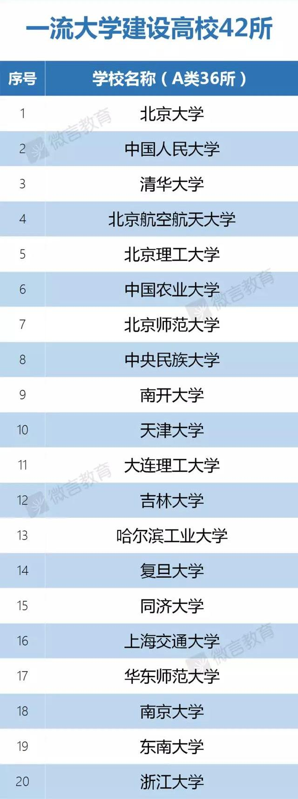
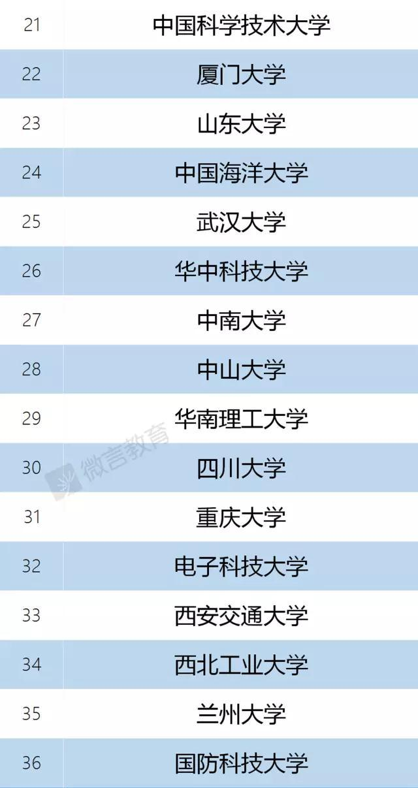
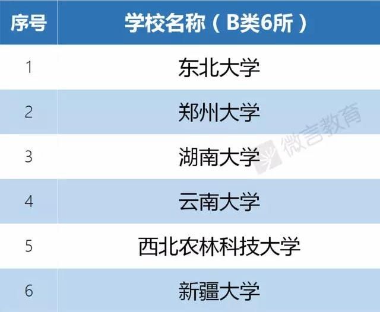
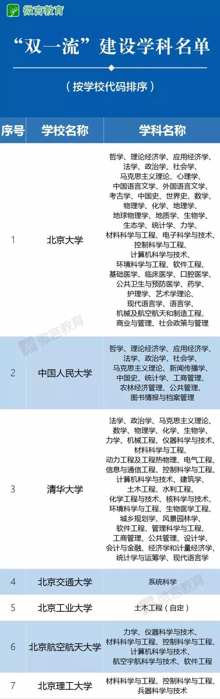
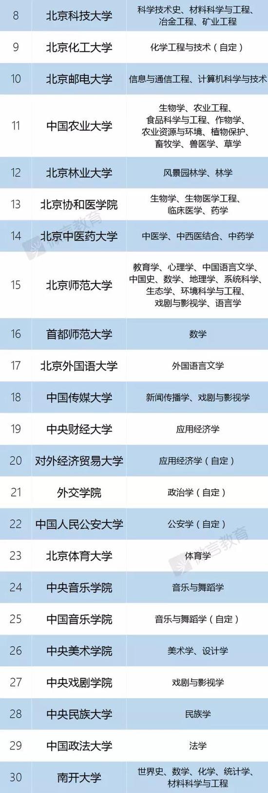

每日一篇——快讯 / 双一流高校及学科建设高校名单 正式公布
 680
680
文章来源： 法制晚报 图片来源：新浪教育
9月21日，教育部、财政部、国家发展改革委三部委联合公布《关于公布世界一流大学和一流学科建设高校及建设学科名单的通知》，其中，一流大学建设高校42所，一流学科建设高校95所。
专家认为，通过“双一流”建设，可以使一批高校的水平得到快速提升，在世界高等教育版图上占有一席之地。同时，重点建设还将推动中国高等教育的整体发展。

记者注意到，一流大学建设的42所高校分A、B两类，A类有36所，B类有6所。北京共有8所高校入选，分别是北京大学、中国人民大学、清华大学、北京航空航天大学、北京理工大学、中国农业大学、北京师范大学、中央民族大学，均在A类名单。
B类6所是，东北大学、郑州大学、湖南大学、云南大学、西北农林科技大学、新疆大学。与此前39所985相比，新疆大学、云南大学、郑州大学3所高校跻身42所一流建设高校。


一流学科建设高校共有95所，其中21所在北京，包括北京交通大学、北京工业大学、北京科技大学、对外经济贸易大学、首都师范大学等。市属高校中，北京工业大学、首都师范大学入选。
据悉，“双一流”建设是中国高等教育领域继“211工程”、“985工程”之后的又一国家战略。2015年10月，国务院公布的《统筹推进世界一流大学和一流学科建设总体方案》提出加快建成一批世界一流大学和一流学科，国家“双一流”建设由此拉开大幕。

没有部属高校的省份也有斩获
据澎湃新闻报道，目前，河北、河南、内蒙古、山西、江西、广西、海南、贵州、云南、西藏、青海、宁夏、新疆等13个省区以及新疆生产建设兵团都没有教育部直属高校，这一状况由于持续已久。
这一次，河南的郑州大学、云南的云南大学以及新疆的新疆大学纷纷跻身一流大学建设高校，它们也是“双一流”建设高校名单中仅有的3所非“985工程”高校。
此外，由河北省人民政府、天津市人民政府和教育部共建，坐落于天津市的河北工业大学有一个学科进入“双一流”建设学科名单，即电气工程（自定）。
按照教育部方面作出的解释，不加（自定）标示的学科，是根据“双一流”建设专家委员会确定的标准而认定的学科，而加有（自定）标示的学科，是根据“双一流”建设专家委员会建议，由高校自主确定的学科。
“双一流”是如何遴选认定的？
根据《总体方案》《实施办法》，“双一流”建设高校通过竞争优选、专家评选、政府比选、动态筛选产生。在广泛听取意见的基础上，以增量方式统筹推动建设，以存量改革激发建设活力。“双一流”建设高校及建设学科的认定遴选程序主要分为四个步骤：
第一步，根据《总体方案》《实施办法》，组建“双一流”建设专家委员会，充分发挥高层次战略专家作用，具体承担遴选认定和审核建设方案的有关工作。
第二步，依托专家委员会，以学科为基础，确定遴选认定标准，产生拟建设高校名单及拟建设学科。
第三步，确定拟建设高校的建设方案。拟建设高校编制论证建设方案，经所属省级人民政府或主管部门审核后，报三部委。专家委员会对拟建设高校的建设方案进行审议咨询，首先把牢政治关，其次坚持综合评价和内涵发展导向，逐校对建设方案提出具体咨询意见。三部委研究后，根据咨询意见通知有关高校修改完善建设方案，并对修改完善情况进行核对把关。
第四步，三部委根据专家委员会意见，研究确定一流大学、一流学科建设高校及建设学科，报国务院批准。其中，专家委员会根据国家需求、布局、区域发展以及政策连续性等因素，建议部分高校自主确定了一批建设学科，考虑到这批学科的特殊性，在名单中特予注明。 文/记者 张莹

